Model Optimization
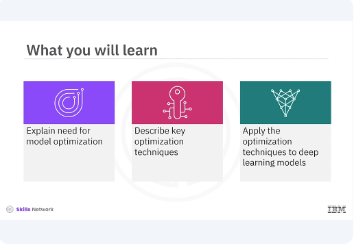
Welcome to this video on model optimization. After watching this video, you'll be able to explain need for model optimization, describe key optimization techniques, apply the optimization techniques to deep learning models.
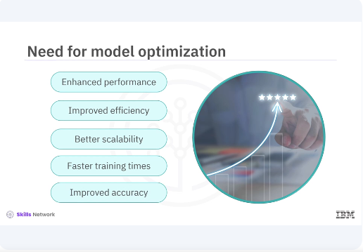
Model optimization aims to improve the performance and efficiency of your neural networks. Model optimization is crucial in deep learning as it helps enhance the performance, efficiency and scalability of models. Optimized models can lead to faster training times, better utilization of hardware resources, and improved accuracy. There are several common techniques for model optimization including weight initialization, learning rate scheduling, and batch normalization. Each of these techniques address different aspects of the training process to improve model performance.
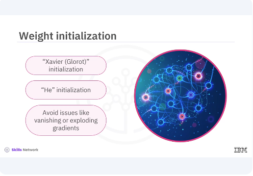
Proper weight initialization can significantly impact the convergence and performance of a neural network. Methods such as Xavier Glorot initialization and He initialization are commonly used. These methods set the initial weights to avoid issues like vanishing or exploding gradients.
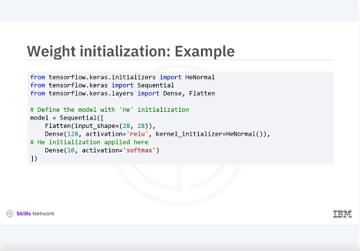
In this example, you will apply the He initialization method using keras. He initialization is suitable for layers with relu activation, helping maintain a stable gradient flow during training.
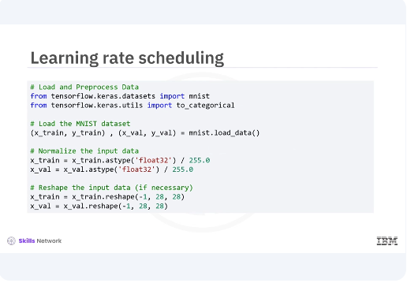
Let's look at the training rate scheduling technique for model optimization. You start by loading your dataset and getting it ready for training. You will be working with the MNIST dataset, a classic choice for image classification tasks. You begin by loading the MNIST dataset, then normalizing the pixel values to be between zero and one for better performance during training. Lastly, you reshape the data to ensure it's in the correct format.
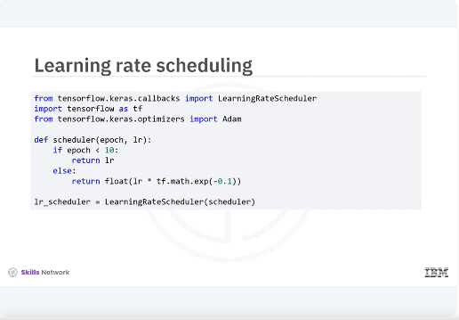
Next you will implement a learning rate scheduler to adjust your learning rate dynamically during training. This will help your model converge more efficiently. Here you define a scheduler function that keeps the learning rate constant for the first ten epochs, then exponentially decreases it. This can help the model fine tune its learning as training progresses.
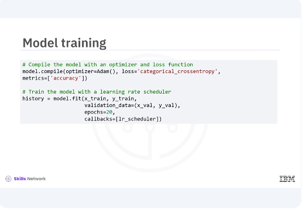
Now were ready to train our model. You will train for 20 epochs and validate its performance with your validation data. The learning rate scheduler will be in action during this time. The training process begins with our model, learning from the training data and adjusting based on validation performance. The learning rate scheduler will help fine tune this process as you proceed.
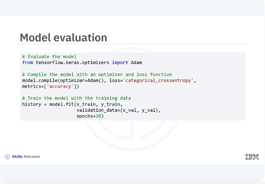
Before you evaluate your model, you need to train it on the training data. You will train for 20 epochs while validating its performance with your validation data. Once the training is complete, you will evaluate the model's performance on the validation set and it can be used for further use cases. Training the model allows it to learn from the training data and adjust its parameters to improve performance. After training, you evaluate the model's performance on unseen validation data to check its generalization capability.
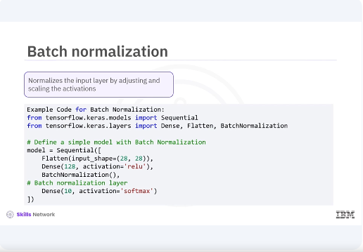
Now let's briefly explore additional techniques like batch normalization, mixed precision training, model pruning and quantization, and how they can help improve model performance and efficiency. Batch normalization. Batch normalization is a technique used to normalize the input layer by adjusting and scaling the activations. This code can help accelerate training, improve model convergence, and reduce the sensitivity to the initial learning rate.
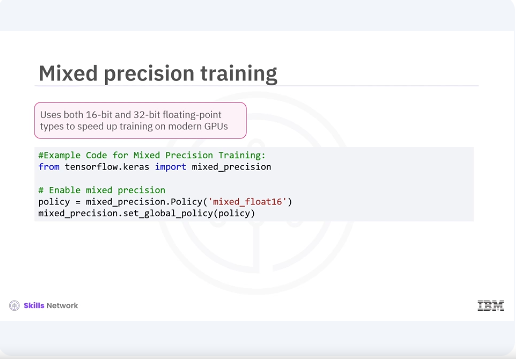
Mixed precision training. Mixed precision training involves using both 16-bit and 32-bit floating-point types to speed up training on modern GPUs, leading to faster computation and reduced memory usage. Model pruning.
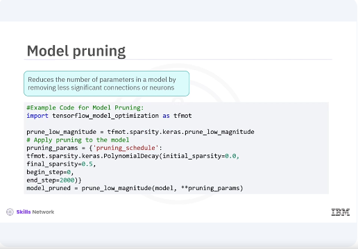
Model pruning reduces the number of parameters in a model by removing less significant connections or neurons, making it more efficient without a substantial loss in accuracy.
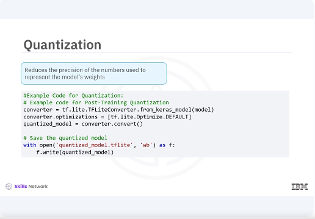
Quantization. Quantization reduces the precision of the numbers used to represent the models' weights, which helps in deploying models on edge devices by reducing memory usage and inference time.
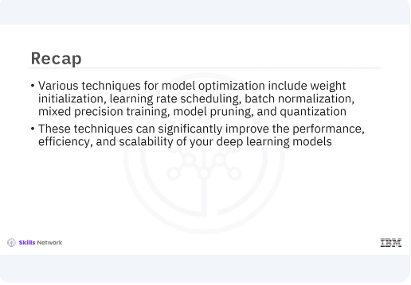
In this video, you learned that various techniques for model optimization include weight initialization, learning rate scheduling, batch normalization, mixed precision training, model pruning, and quantization. These techniques can significantly improve the performance, efficiency and scalability of your deep learning models.